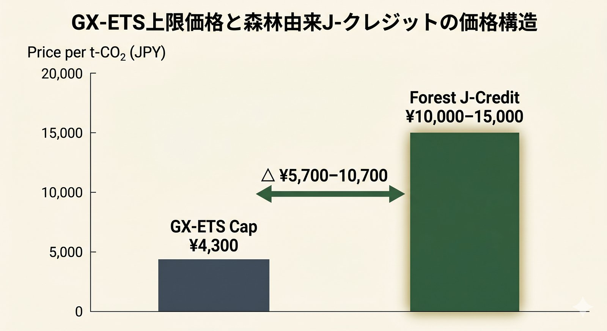

GX-ETS · Forest Credit · 2026
2026年4月から本格運用開始の日本版排出量取引制度（GX-ETS）。 排出枠の上限価格4,300円は、現在1万円以上で取引される森林由来J-クレジット市場に どのような構造変化をもたらすか。対象企業・購入経路・戦略を整理します。
GX-ETS（Green Transformation Emissions Trading System）は、 日本企業のCO₂排出量に上限（キャップ）を設け、その範囲内で排出枠を売買させる 日本版の排出量取引制度です。経済産業省GXグループが管轄し、 2023年から第1フェーズ（自主参加・GXリーグ）として運用、 2026年4月から第2フェーズ（本格運用）へ移行します。
10万 t-CO₂/年 以上
これまでの自主参加から、年間排出量が一定規模を超える企業は強制参加へ。鉄鋼・電力・化学・セメント・自動車などの大手が対象
¥1,700〜¥4,300
排出枠の市場価格に上限・下限を設定（2025年12月発表）。極端な価格変動を抑制する設計
森林由来 J-Credit 可
森林経営活動由来のJ-クレジットは引き続きオフセット利用OK。一方、利用上限ルールも導入される見込み
ここで構造的な歪みが生まれます。森林由来J-クレジットの市場価格は 2025年に1t-CO₂あたり¥10,000の心理的節目を上抜けし、 2025年後半には¥15,000台での約定事例も観測されています。
価格ギャップの構図
¥4,300 vs ¥10,000〜¥15,000
GX-ETS 排出枠上限 ＜ 森林由来J-クレジット市場価格
→ 企業の合理的選択は「上限近くで排出枠を買う」となり、森林由来の高価格クレジットへの需要圧力が変化する
シンプルに言えば、企業が排出を埋め合わせる選択肢として 「排出枠を¥4,300で買う」と「森林由来J-クレジットを¥10,000で買う」が 並存することになります。 財務合理性だけ見れば前者が選ばれやすく、森林由来クレジットの価格は 上限価格に「引きずられる」圧力が働く可能性があります。

価格論理だけだと森林由来クレジットが不利に見えますが、 実際の購入判断には非価格要因が重く効きます。
TNFD（自然関連財務情報開示）の本格化により、企業は 「自然へのポジティブ・インパクト」を定性的にも開示する必要が出てきます。 森林由来クレジットは 森林整備・水源涵養・生物多様性に紐づく「ストーリー」を持つため、 TNFD開示の根拠資料として価値があります。排出枠単独ではこのストーリーは作れません。
地方の森林組合・森林所有者と契約することは、 地域経済・林業活性化の文脈で投資家・社員・顧客から評価されます。 GX-ETS 排出枠の購入では同じ社会価値の説明はできません。
自社のCSR活動の一環として 特定の山・流域と継続的に関わる「企業の森」スキームと 森林由来J-クレジットは強く連動します。 これも価格には現れないが、企業ブランディング上の重要な選好理由です。
| 戦略 | 概要 | 想定コスト | 非価格メリット |
|---|---|---|---|
| A. 排出削減を最優先 | 自社の省エネ・電化・水素化で排出量自体を減らす | 初期投資大・長期回収 | 本質的GX |
| B. GX-ETS 排出枠で補完 | 上限¥4,300/t の枠を購入 | 低 | 制度的最安・確実 |
| C. 森林由来J-クレジット併用 | 排出枠 + 森林クレジット ¥10,000+/t で一部オフセット | 中〜高 | TNFD・地域貢献・ストーリー |
| D. 自社の森を持つ | 「企業の森」スキームで長期的に森林を所有・管理 | 初期高・長期希薄 | 最強のブランディング・継続性 |
2026年〜2030年の現実的なポートフォリオは、A（削減）を主軸に、Bで穴埋め、CとDでブランド・開示価値を出す三層構造になりやすいでしょう。
2026年度は両側の圧力が拮抗します。
| 下押し圧力 | 上昇圧力 |
|---|---|
| GX-ETS 上限価格¥4,300 が代替選択肢として機能 | TNFD 義務化に向けた「ストーリー付き」需要拡大 |
| GX-ETS でのクレジット利用上限ルール導入見込み | 森林由来クレジットの新規創出は手続き重く供給制約 |
| 排出削減そのものを優先する企業文化の強化 | 「一社一山」「企業の森」流行で需要源が分散・拡大 |
2026〜2027年は両側の力が均衡し、現在の¥10,000〜¥15,000レンジで横ばい・微増のシナリオが現実的と見られます。 中長期では、森林由来クレジットの内部分化（プレミアム化／コモディティ化）が進む可能性が高いと考えます。
GX-ETS 第2フェーズで森林由来クレジットを購入・併用しようとする企業に対して、 もりみえるは以下を無料で提供しています。
最終更新：2026年5月19日。GX-ETSの詳細設計は引き続き経済産業省で検討中であり、本記事公開時点の情報に基づいています。